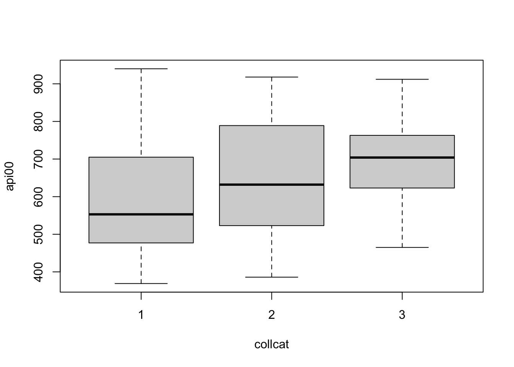
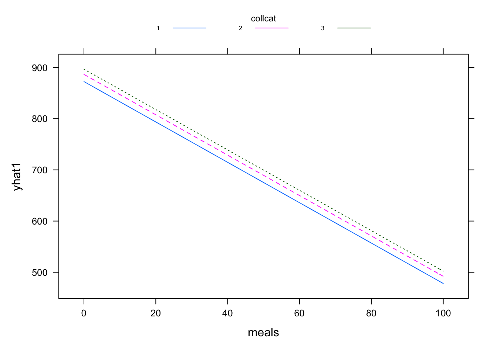

4 Linear Models
4.1 ANOVA: Orthogonal factors
Example from Meier, ANOVA (web document)
## Create data (skip if not interested) ####
acids <- c(1.697, 1.601, 1.830,
2.032, 2.017, 2.409,
2.211, 1.673, 1.973,
2.091, 2.255, 2.987)
R50 <- rep(c("no", "yes", "no", "yes"), each = 3)
R21 <- rep(c("no", "no", "yes", "yes"), each = 3)
cheddar <- data.frame(R50, R21, acids)str(cheddar)## 'data.frame': 12 obs. of 3 variables:
## $ R50 : chr "no" "no" "no" "yes" ...
## $ R21 : chr "no" "no" "no" "no" ...
## $ acids: num 1.7 1.6 1.83 2.03 2.02 ...cheddar## R50 R21 acids
## 1 no no 1.697
## 2 no no 1.601
## 3 no no 1.830
## 4 yes no 2.032
## 5 yes no 2.017
## 6 yes no 2.409
## 7 no yes 2.211
## 8 no yes 1.673
## 9 no yes 1.973
## 10 yes yes 2.091
## 11 yes yes 2.255
## 12 yes yes 2.987table(cheddar$R21, cheddar$R50)##
## no yes
## no 3 3
## yes 3 3Get model matrix for two-factor model
cheddar.lm1 <- lm(acids ~ R21 + R50)
anova(cheddar.lm1)## Analysis of Variance Table
##
## Response: acids
## Df Sum Sq Mean Sq F value Pr(>F)
## R21 1 0.21440 0.21440 2.6526 0.13782
## R50 1 0.65614 0.65614 8.1178 0.01911 *
## Residuals 9 0.72744 0.08083
## ---
## Signif. codes: 0 '***' 0.001 '**' 0.01 '*' 0.05 '.' 0.1 ' ' 1cheddar.lm2 <- lm(acids ~ R50 + R21)
anova(cheddar.lm2)## Analysis of Variance Table
##
## Response: acids
## Df Sum Sq Mean Sq F value Pr(>F)
## R50 1 0.65614 0.65614 8.1178 0.01911 *
## R21 1 0.21440 0.21440 2.6526 0.13782
## Residuals 9 0.72744 0.08083
## ---
## Signif. codes: 0 '***' 0.001 '**' 0.01 '*' 0.05 '.' 0.1 ' ' 1Sums of squares are the same regardless of the order of R21 and R50 in the model.
Get model matrix.
X <- model.matrix(cheddar.lm1)
X## (Intercept) R21yes R50yes
## 1 1 0 0
## 2 1 0 0
## 3 1 0 0
## 4 1 0 1
## 5 1 0 1
## 6 1 0 1
## 7 1 1 0
## 8 1 1 0
## 9 1 1 0
## 10 1 1 1
## 11 1 1 1
## 12 1 1 1
## attr(,"assign")
## [1] 0 1 2
## attr(,"contrasts")
## attr(,"contrasts")$R21
## [1] "contr.treatment"
##
## attr(,"contrasts")$R50
## [1] "contr.treatment"Calculate \(\textbf{X}'\textbf{X}\)
t(X) %*% X## (Intercept) R21yes R50yes
## (Intercept) 12 6 6
## R21yes 6 6 3
## R50yes 6 3 6solve(t(X) %*% X)## (Intercept) R21yes R50yes
## (Intercept) 0.2500000 -0.1666667 -0.1666667
## R21yes -0.1666667 0.3333333 0.0000000
## R50yes -0.1666667 0.0000000 0.33333334.2 Multiple linear regression - conditional and marginal effects
Note: See David’s book, ch. 3.
library(tidyverse)
data_height <- read_csv("_data/plantHeightSingleSpp.csv")## Rows: 178 Columns: 35## ── Column specification ────────────────────────────────────────────────────────────────────────────
## Delimiter: ","
## chr (6): Genus_species, Family, growthform, Country, Site, entered.by
## dbl (29): sort_number, site, height, loght, lat, long, alt, temp, diurn.temp, isotherm, temp.sea...##
## ℹ Use `spec()` to retrieve the full column specification for this data.
## ℹ Specify the column types or set `show_col_types = FALSE` to quiet this message.mod_height1 <- lm(height ~ lat, data = data_height)
summary(mod_height1)##
## Call:
## lm(formula = height ~ lat, data = data_height)
##
## Residuals:
## Min 1Q Median 3Q Max
## -13.558 -6.955 -3.978 3.654 54.333
##
## Coefficients:
## Estimate Std. Error t value Pr(>|t|)
## (Intercept) 14.42516 1.72433 8.366 1.78e-14 ***
## lat -0.17631 0.04847 -3.637 0.000362 ***
## ---
## Signif. codes: 0 '***' 0.001 '**' 0.01 '*' 0.05 '.' 0.1 ' ' 1
##
## Residual standard error: 10.95 on 176 degrees of freedom
## Multiple R-squared: 0.06991, Adjusted R-squared: 0.06463
## F-statistic: 13.23 on 1 and 176 DF, p-value: 0.0003617mod_height2 <- lm(height ~ rain + lat, data = data_height)
summary(mod_height2)##
## Call:
## lm(formula = height ~ rain + lat, data = data_height)
##
## Residuals:
## Min 1Q Median 3Q Max
## -14.738 -5.932 -3.418 2.833 52.188
##
## Coefficients:
## Estimate Std. Error t value Pr(>|t|)
## (Intercept) 4.521724 3.077683 1.469 0.143575
## rain 0.004058 0.001062 3.823 0.000183 ***
## lat -0.034109 0.059707 -0.571 0.568547
## ---
## Signif. codes: 0 '***' 0.001 '**' 0.01 '*' 0.05 '.' 0.1 ' ' 1
##
## Residual standard error: 10.55 on 175 degrees of freedom
## Multiple R-squared: 0.1416, Adjusted R-squared: 0.1318
## F-statistic: 14.43 on 2 and 175 DF, p-value: 1.579e-06Reverse order of model terms
mod_height2a <- lm(height ~ lat + rain, data = data_height)
summary(mod_height2a)##
## Call:
## lm(formula = height ~ lat + rain, data = data_height)
##
## Residuals:
## Min 1Q Median 3Q Max
## -14.738 -5.932 -3.418 2.833 52.188
##
## Coefficients:
## Estimate Std. Error t value Pr(>|t|)
## (Intercept) 4.521724 3.077683 1.469 0.143575
## lat -0.034109 0.059707 -0.571 0.568547
## rain 0.004058 0.001062 3.823 0.000183 ***
## ---
## Signif. codes: 0 '***' 0.001 '**' 0.01 '*' 0.05 '.' 0.1 ' ' 1
##
## Residual standard error: 10.55 on 175 degrees of freedom
## Multiple R-squared: 0.1416, Adjusted R-squared: 0.1318
## F-statistic: 14.43 on 2 and 175 DF, p-value: 1.579e-06drop1(mod_height2, test = "F")## Single term deletions
##
## Model:
## height ~ rain + lat
## Df Sum of Sq RSS AIC F value Pr(>F)
## <none> 19469 841.67
## rain 1 1625.55 21094 853.95 14.6117 0.0001834 ***
## lat 1 36.31 19505 840.00 0.3264 0.5685469
## ---
## Signif. codes: 0 '***' 0.001 '**' 0.01 '*' 0.05 '.' 0.1 ' ' 14.2.1 Marginal and Conditional interpretations
The marginal effect of a predictor variable in a regression model is the effect of that variable alone on the outcome, estimated without including any other predictor variable in the model.
The model above with lat as the only predictor variable, mod_height1, gives the marginal effect of lat as -0.176.
The conditional effect of a predictor variable in a regression model is the effect of that variable on the outcome when other predictors are included in the model and all those other predictors are held constant.
The model above with both lat and rain as predictor variables, mod_height2, gives the conditional effect of lat, after controlling for the effect of rain, as -0.034.
Note that in R, the “summary” output for “lm” gives the conditional effect of each predictor variable - i.e. the effect conditional on all the other predictor variables, or in other words, after adjusting for or controlling for, all the other predictor variables. This is shown by comparing the three blocks of output immediately above given by summary(mod_height2), summary(mod_height2a) and drop1(mod_height2).
4.3 Linear model with subsampling
4.3.1 Load necessary R packages
library(gamair) ## Data
library(ggplot2)
library(nlme)
library(emmeans)
library(dplyr)Example
Note: This example is from the book, Wood, S. 2017. Generalized Additive Models: An Introduction with R. CRC Press, 2nd ed., pp. 61-65. This book is available as an e-book in UNSW library. (The example is also in the 1st edition of this book on pp. 277-281. Another example of this idea with a different data set, but without the mixed model analysis, is in Steel, R., Torrie, J. and Dickey, D. 1997. Principles and Procedures of Statistics: A Biometrical Approach. McGraw Hill, 3rd ed., pp. 157-165.)
Tree seedlings are grown under two levels of carbon dioxide concentration, with three trees assigned to each treatment. At six months of growth, stomatal area is measured at each of four random locations on each plant.
Notes
- “Stomates” are the tiny holes in plant leaves through which carbon dioxide and water vapour are exchanged with the atmosphere during photosynthesis and respiration.
- The sample sizes here are artificially small simply to illustrate the ideas.
4.3.2 Data
The data, “stomata”, is included in the R package, “gamair”.
data(stomata)str(stomata)## 'data.frame': 24 obs. of 3 variables:
## $ area: num 1.61 1.63 1.54 1.72 1.39 ...
## $ CO2 : Factor w/ 2 levels "1","2": 1 1 1 1 1 1 1 1 1 1 ...
## $ tree: Factor w/ 6 levels "1","2","3","4",..: 1 1 1 1 2 2 2 2 3 3 ...head(stomata)## area CO2 tree
## 1 1.605574 1 1
## 2 1.630071 1 1
## 3 1.539119 1 1
## 4 1.718732 1 1
## 5 1.389616 1 2
## 6 1.585880 1 2Convert CO2 and tree to factors.
stomata$CO2 <- factor(stomata$CO2)
## For CO2, "1" is "low" and "2" is "high".
## Add these labels.
stomata$CO2 <- factor(stomata$CO2, labels = c("low", "high"))
stomata$tree <- factor(stomata$tree)4.3.3 Summary statistics and plots
summary(stomata)## area CO2 tree
## Min. :0.8753 low :12 1:4
## 1st Qu.:1.5396 high:12 2:4
## Median :2.0166 3:4
## Mean :2.0679 4:4
## 3rd Qu.:2.7600 5:4
## Max. :3.1149 6:4boxplot(stomata$area ~ stomata$CO2)
Plot with a strip plot (strip chart) as sample sizes are small.
stripchart(area ~ CO2, data = stomata, ylab = "CO2 conc.")
ggplot(stomata, aes(x = CO2, y = area, colour = tree)) +
geom_jitter(position = position_jitter(0.075))The variance appears fairly constant and the distribution looks fairly symmetric. (This suggests the linear model assumptions will be met, but they’ll be checked later. The purpose of this example is to illustrate the proper way to analyse data from this type of experimental design and not to worry about assumptions, though.)
Note: Where you’ve got data with a quantitative, continuous response variable, the usual function to use for a linear model is “lm”. In the short course, Introductory Statistics for Researchers, we used a function, “aov”, for the one-way ANOVA model we fitted. That function is fairly limited in when you can use it and so “lm” is the function most commonly used. However, there are situations where lm is not appropriate.
The following analyses are taken from the book by Simon Wood cited above. Explanations of what’s going on are more detailed in the book. It’s useful to read the material in the book about this example but not to worry about the technical details there.
4.3.4 Wrong analysis: fixed effects linear model
To account for stomatal area here, we’d expect some contribution from CO2 concentration (there are two levels, low and high) and some contribution from individual trees. The following analysis looks reasonable at face value.
m1 <- lm(area ~ CO2 + tree, data = stomata)
summary(m1)##
## Call:
## lm(formula = area ~ CO2 + tree, data = stomata)
##
## Residuals:
## Min 1Q Median 3Q Max
## -0.30672 -0.10625 -0.01528 0.08436 0.37674
##
## Coefficients: (1 not defined because of singularities)
## Estimate Std. Error t value Pr(>|t|)
## (Intercept) 1.62337 0.10932 14.850 1.52e-11 ***
## CO2high 0.70639 0.15460 4.569 0.000238 ***
## tree2 -0.02473 0.15460 -0.160 0.874685
## tree3 -0.46041 0.15460 -2.978 0.008059 **
## tree4 0.45948 0.15460 2.972 0.008166 **
## tree5 0.57378 0.15460 3.711 0.001597 **
## tree6 NA NA NA NA
## ---
## Signif. codes: 0 '***' 0.001 '**' 0.01 '*' 0.05 '.' 0.1 ' ' 1
##
## Residual standard error: 0.2186 on 18 degrees of freedom
## Multiple R-squared: 0.9215, Adjusted R-squared: 0.8997
## F-statistic: 42.24 on 5 and 18 DF, p-value: 2.511e-09From above, \(P < 0.0001\). The “NAs” in the output look odd.
The above model is wrong, however, because CO2 and tree are confounded. Trees are nested in CO2 treatments - we cannot, for example, separate the effect of low CO2 from the effect of tree 1 on the predicted value of area for that tree.
Compare the above model with a model including only CO2. The “anova” function below compares the two models - the \(P\) value in the output is testing whether the two models are no better than each other.
m0 <- lm(area ~ CO2, data = stomata)
anova(m0, m1)## Analysis of Variance Table
##
## Model 1: area ~ CO2
## Model 2: area ~ CO2 + tree
## Res.Df RSS Df Sum of Sq F Pr(>F)
## 1 22 2.1348
## 2 18 0.8604 4 1.2744 6.6654 0.001788 **
## ---
## Signif. codes: 0 '***' 0.001 '**' 0.01 '*' 0.05 '.' 0.1 ' ' 1The above output says that the models are not equally good ( \(P = 0.002\), the \(P\) value is very small); consequently, the larger model is better - with more explanatory variables, it has more explanatory value. As model m0 contains only CO2 and m1 contains both CO2 and tree, then tree differences are important. However, from those models, we have no way of testing whether CO2 differences are important (as the only difference between the models was whether they included tree or not).
Test for CO2 effects by comparing models with tree but with and without CO2.
m2 <- lm(area ~ tree, data = stomata)
anova(m2, m1)## Analysis of Variance Table
##
## Model 1: area ~ tree
## Model 2: area ~ CO2 + tree
## Res.Df RSS Df Sum of Sq F Pr(>F)
## 1 18 0.8604
## 2 18 0.8604 0 2.2204e-16The above output shows the two models are the same (the RSS, residual sum of squares, for each is the same) and so we cannot use this analysis to test for CO2 effects. This is caused by the confounding problem.
One way of getting around this problem is to average the response variable values for each tree and use the averaged values as our response variable.
Note you can only do this if there are the same number of data values in each group you average and there are no missing values!
stomata.avg <- stomata %>% group_by(tree) %>%
summarise(area = mean(area))
CO2_by_tree <- stomata %>% distinct(tree, CO2)
stomata.avg <- data.frame(stomata.avg, CO2 = CO2_by_tree$CO2)
str(stomata.avg)## 'data.frame': 6 obs. of 3 variables:
## $ tree: Factor w/ 6 levels "1","2","3","4",..: 1 2 3 4 5 6
## $ area: num 1.62 1.6 1.16 2.79 2.9 ...
## $ CO2 : Factor w/ 2 levels "low","high": 1 1 1 2 2 2m3 <- lm(area ~ CO2, data = stomata.avg)
summary(m3)##
## Call:
## lm(formula = area ~ CO2, data = stomata.avg)
##
## Residuals:
## 1 2 3 4 5 6
## 0.1617 0.1370 -0.2987 0.1151 0.2294 -0.3444
##
## Coefficients:
## Estimate Std. Error t value Pr(>|t|)
## (Intercept) 1.4617 0.1629 8.970 0.000855 ***
## CO2high 1.2125 0.2304 5.262 0.006247 **
## ---
## Signif. codes: 0 '***' 0.001 '**' 0.01 '*' 0.05 '.' 0.1 ' ' 1
##
## Residual standard error: 0.2822 on 4 degrees of freedom
## Multiple R-squared: 0.8738, Adjusted R-squared: 0.8422
## F-statistic: 27.69 on 1 and 4 DF, p-value: 0.006247anova(m3)## Analysis of Variance Table
##
## Response: area
## Df Sum Sq Mean Sq F value Pr(>F)
## CO2 1 2.20531 2.20531 27.687 0.006247 **
## Residuals 4 0.31861 0.07965
## ---
## Signif. codes: 0 '***' 0.001 '**' 0.01 '*' 0.05 '.' 0.1 ' ' 1The above analysis is valid, although it does involve a two-step process where you average the data for each tree first.
Another way of getting around this problem is to use the “aov” function here. Note the same conditions in bold above apply to using the aov function. We use the original, non-averaged data with aov.
m4 <- aov(area ~ CO2 + Error(tree), data = stomata)
summary(m4)##
## Error: tree
## Df Sum Sq Mean Sq F value Pr(>F)
## CO2 1 8.821 8.821 27.69 0.00625 **
## Residuals 4 1.274 0.319
## ---
## Signif. codes: 0 '***' 0.001 '**' 0.01 '*' 0.05 '.' 0.1 ' ' 1
##
## Error: Within
## Df Sum Sq Mean Sq F value Pr(>F)
## Residuals 18 0.8604 0.0478From the above two analyses, the correct \(P\) value for the effect of CO2 is 0.00625.
4.3.5 Right analysis: mixed effects linear model
A better (and correct) approach is to use a mixed effects model. This works even if treatment groups do not have the same number of replicates (or if there are missing values).
In this approach, tree is included as a grouping variable to identify clusters of data values (i.e. to identify which observed values come from which tree). Observations from the same tree will be correlated to some extent and this needs to be incorporated in the model via a grouping variable. If these groups were not specified in the model, it would appear as if all observations were independent and this would lead to smaller uncertainty in the estimates of treatment effects (because you’d be overstaing the number of independent observations, and hence, the amount of information you really had, or “information value” of your data). The trees in the study are considered as being randomly sampled from the (large) population of trees we are studying. The effects of individual trees are not considered important but they need to be included in the model to identify groups of data values.
So, let’s fit a mixed model. You can use the “nlme” package or the “lme4” package. The nlme package is used here because it gives \(P\) values, while the lme4 package does not (another story!).
m5 <- lme(area ~ CO2, random = ~ 1 | tree, data = stomata)
#summary(m5)
summary(m5)$tTable## Value Std.Error DF t-value p-value
## (Intercept) 1.461659 0.1629435 18 8.970341 4.625996e-08
## CO2high 1.212522 0.2304370 4 5.261837 6.246688e-03From the above output, the \(P\) value for the effect of CO2 concentration is 0.00625. This is the same as the \(P\) values above using the averaged data and using the aov function.
4.3.6 An aside - checking model assumptions
Let’s check the assumptions for the mixed model because we can. This shows how to check the two assumptions of constant variance and Normal distribution for a linear mixed model. We won’t worry here about whether the assumptions are satisfied, as the emphasis is on appropriate methods to use.
Equal variance assumption
Use the plot function with the model name. This produces a residuals vs fitted values plot, which is the standard plot for checking the constant variance assumption.
plot(m5)The variances appear to be somewhat unequal.
Normal distribution assumption
Use a Normal quantile-quantile (Q-Q) plot.
qqnorm(residuals(m5))
qqline(residuals(m5))
The Normal distribution assumption does not appear to be particularly well met.
Back to the main story …
With balanced data, you’ll get the same results from an analysis using aov or lme. However, it’s preferable to use a mixed effects model, as recommended by Simon Wood and described here.
4.3.7 Fitted values and confidence intervals
The R package, “emmeans”, is very useful for getting means and their confidence intervals and plots of these. This package will work with models from lm, aov , lme, ….
Estimates and plots from the fixed effects model using averaged data and the mixed model are below.
m3.emm <- emmeans(m3, ~ CO2)
summary(m3.emm)## CO2 emmean SE df lower.CL upper.CL
## low 1.46 0.163 4 1.01 1.91
## high 2.67 0.163 4 2.22 3.13
##
## Confidence level used: 0.95plot(m3.emm)
m5.emm <- emmeans(m5, ~CO2, mode = "satterthwaite")
summary(m5.emm)## CO2 emmean SE df lower.CL upper.CL
## low 1.46 0.163 3.97 1.01 1.92
## high 2.67 0.163 3.97 2.22 3.13
##
## Degrees-of-freedom method: satterthwaite
## Confidence level used: 0.95plot(m5.emm)4.3.8 Another aside - code the nested structure - not recommended
The analysis can be done with lm if the model is coded so that the nesting of trees within CO2 treatments is incorporated. It can only be done this way because, again, the data is balanced and there are no missing values. The full data set is used.
m6 <- lm(area ~ CO2 / tree, data = stomata)
anova(m6)## Analysis of Variance Table
##
## Response: area
## Df Sum Sq Mean Sq F value Pr(>F)
## CO2 1 8.8213 8.8213 184.5452 6.686e-11 ***
## CO2:tree 4 1.2744 0.3186 6.6654 0.001788 **
## Residuals 18 0.8604 0.0478
## ---
## Signif. codes: 0 '***' 0.001 '**' 0.01 '*' 0.05 '.' 0.1 ' ' 1In the output above, the effect of CO2 needs to be compared against the correct residual term. The \(P\) value against CO2 shown in the output is obtained by comparing the variation of CO2 treatments against the variation among observations within trees. This is not the correct comparison. As tree is the experimental unit (leaf is the observational unit), the correct term for the comparison is the term corresponding to the variation between trees within CO2 treatments. In the output, that term is CO2:tree. Consequently, the correct \(P\) value for the effect of CO2 is obtained from the \(F\) statistic calculated as 8.8213 / 0.3186 (i.e. (Mean Sq for CO2) / (Mean Sq for appropriate residual term)). The calculation for obtaining the \(P\) value is below.
f_obs <- 8.8213 / 0.3186
f_obs## [1] 27.6877This is the correct \(F\) value, as seen previously.
p_val <- 1 - pf(f_obs, 1, 4)
p_val## [1] 0.00624638The \(P\) value is also clearly the same as seen previously.
It could be awkward to get correct confidence intervals from this model.
4.3.9 Summary
When you have subsampling (i.e. multiple measurements made on individual experimental units), use a mixed effects model.
If you have unequal replication across treatments or missing values, definitely use a mixed effects model.
4.4 Marginal means - emmeans example
library(emmeans)
library(tidyr)
library(dplyr)
library(RcmdrMisc)From the document, Basics of estimated marginal means.
https://cran.r-project.org/web/packages/emmeans/vignettes/basics.html
pigs {emmeans} R Documentation
Effects of dietary protein on free plasma leucine concentration in pigs
Description
A two-factor experiment with some observations lost
A data frame with 29 observations and 3 variables:
- source: Source of protein in the diet (factor with 3 levels: fish meal, soybean meal, dried skim milk)
- percent: Protein percentage in the diet (numeric with 4 values: 9, 12, 15, and 18)
- conc: Concentration of free plasma leucine, in mcg/ml
Source: Windels HF (1964) PhD thesis, Univ. of Minnesota. (Reported as Problem 10.8 in Oehlert G (2000) A First Course in Design and Analysis of Experiments, licensed under Creative Commons, http://users.stat.umn.edu/~gary/Book.html.) Observations 7, 22, 23, 31, 33, and 35 have been omitted, creating a more notable imbalance.
[Package emmeans version 1.4.6]
data(pigs, package = "emmeans")
pigs## source percent conc
## 1 fish 9 27.8
## 2 fish 9 23.7
## 3 fish 12 31.5
## 4 fish 12 28.5
## 5 fish 12 32.8
## 6 fish 15 34.0
## 7 fish 15 28.3
## 8 fish 18 30.6
## 9 fish 18 32.7
## 10 fish 18 33.7
## 11 soy 9 39.3
## 12 soy 9 34.8
## 13 soy 9 29.8
## 14 soy 12 39.8
## 15 soy 12 40.0
## 16 soy 12 39.1
## 17 soy 15 38.5
## 18 soy 15 39.2
## 19 soy 15 40.0
## 20 soy 18 42.9
## 21 skim 9 40.6
## 22 skim 9 31.0
## 23 skim 9 34.6
## 24 skim 12 42.9
## 25 skim 12 50.1
## 26 skim 12 37.4
## 27 skim 15 59.5
## 28 skim 15 41.4
## 29 skim 18 59.8pigs$percent <- factor(pigs$percent)numSummary(pigs[ , 3], statistics = "mean",
groups = interaction(pigs$source, pigs$percent))## mean n
## fish.9 25.75000 2
## soy.9 34.63333 3
## skim.9 35.40000 3
## fish.12 30.93333 3
## soy.12 39.63333 3
## skim.12 43.46667 3
## fish.15 31.15000 2
## soy.15 39.23333 3
## skim.15 50.45000 2
## fish.18 32.33333 3
## soy.18 42.90000 1
## skim.18 59.80000 1Cell means (see also below)
These are arithmetic means of values in each two-way combination
with(pigs, tapply(conc, INDEX = list(source, percent), mean))## 9 12 15 18
## fish 25.75000 30.93333 31.15000 32.33333
## soy 34.63333 39.63333 39.23333 42.90000
## skim 35.40000 43.46667 50.45000 59.80000with(pigs, interaction.plot(percent, source, conc))
Marginal means
Arithmetic mean of values in each “percent” group
with(pigs, tapply(conc, percent, mean))## 9 12 15 18
## 32.70000 38.01111 40.12857 39.94000Find average for percent = 15
( (34.0 + 28.3) + (38.5 + 39.2 + 40.0) + (59.5 + 41.4) ) / 7## [1] 40.12857Cell means
Arithmetic means of values in each combination - same as above with two-way tapply call
cell.means <- matrix(with(pigs,
tapply(conc, interaction(source, percent), mean)),
nrow = 3)
cell.means## [,1] [,2] [,3] [,4]
## [1,] 25.75000 30.93333 31.15000 32.33333
## [2,] 34.63333 39.63333 39.23333 42.90000
## [3,] 35.40000 43.46667 50.45000 59.80000apply(cell.means, 2, mean)## [1] 31.92778 38.01111 40.27778 45.01111Compare with arithmetic mean of values in each “percent” group
with(pigs, tapply(conc, percent, mean))## 9 12 15 18
## 32.70000 38.01111 40.12857 39.94000The two sets are different because the different cells do not all have the same number of observations (some observations were lost).
with(pigs, table(source, percent))## percent
## source 9 12 15 18
## fish 2 3 2 3
## soy 3 3 3 1
## skim 3 3 2 1The marginal mean for percent = 12 is the same as the average of the cell means because no observations were lost - i.e. there are equal weights on all the cell means.
We can reproduce the marginal means by weighting the cell means with these frequencies. For example, in the last column:
sum(c(3, 1, 1) * cell.means[ , 4]) / 5## [1] 39.944.5 Multiple regression example
library(dplyr)
library(ggplot2)
library(GGally)
library(sjPlot)
library(ggpubr)
library(emmeans)Example from StatSci.org - OzDASL, Australian Institute of Sport
http://www.statsci.org/data/oz/ais.html
Variable Description
Sport Sport Sex male or female Ht Height in cm Wt Weight in kg LBM Lean body mass RCC Red cell count WCC White cell count Hc Hematocrit Hg Hemoglobin Ferr Plasma ferritin concentration BMI Body mass index = weight/height^2 SSF Sum of skin folds %Bfat % body fat
athletes <- read.table("http://www.statsci.org/data/oz/ais.txt",
sep = "", header = T)
str(athletes)
save(athletes, file = "athletes_OzDASL.RData")load("_data/athletes_OzDASL.Rdata")
str(athletes)## 'data.frame': 202 obs. of 13 variables:
## $ Sex : chr "female" "female" "female" "female" ...
## $ Sport : chr "BBall" "BBall" "BBall" "BBall" ...
## $ RCC : num 3.96 4.41 4.14 4.11 4.45 4.1 4.31 4.42 4.3 4.51 ...
## $ WCC : num 7.5 8.3 5 5.3 6.8 4.4 5.3 5.7 8.9 4.4 ...
## $ Hc : num 37.5 38.2 36.4 37.3 41.5 37.4 39.6 39.9 41.1 41.6 ...
## $ Hg : num 12.3 12.7 11.6 12.6 14 12.5 12.8 13.2 13.5 12.7 ...
## $ Ferr : int 60 68 21 69 29 42 73 44 41 44 ...
## $ BMI : num 20.6 20.7 21.9 21.9 19 ...
## $ SSF : num 109.1 102.8 104.6 126.4 80.3 ...
## $ X.Bfat: num 19.8 21.3 19.9 23.7 17.6 ...
## $ LBM : num 63.3 58.5 55.4 57.2 53.2 ...
## $ Ht : num 196 190 178 185 185 ...
## $ Wt : num 78.9 74.4 69.1 74.9 64.6 63.7 75.2 62.3 66.5 62.9 ...athletes$Sex <- factor(athletes$Sex)
athletes$Sport <- factor(athletes$Sport)
#names( athletes )[names(athletes) == "X.Bfat"] <- "Bfat_pc"
## or
athletes <- athletes %>% rename( Bfat_pc = X.Bfat)4.5.1 Regression model
Response: LBM
Predictors:
- height
- weight
- gender
- Ferr
Include log(Ferr) as suggested on OzDASL web page.
athletes$log_Ferr <- log(athletes$Ferr)ggpairs(athletes, columns = c(7, 14, 12, 13, 11))## plot: [1,1] [==>-------------------------------------------------------------------] 4% est: 0s
## plot: [1,2] [=====>----------------------------------------------------------------] 8% est: 0s
## plot: [1,3] [=======>--------------------------------------------------------------] 12% est: 1s
## plot: [1,4] [==========>-----------------------------------------------------------] 16% est: 1s
## plot: [1,5] [=============>--------------------------------------------------------] 20% est: 1s
## plot: [2,1] [================>-----------------------------------------------------] 24% est: 1s
## plot: [2,2] [===================>--------------------------------------------------] 28% est: 1s
## plot: [2,3] [=====================>------------------------------------------------] 32% est: 1s
## plot: [2,4] [========================>---------------------------------------------] 36% est: 1s
## plot: [2,5] [===========================>------------------------------------------] 40% est: 1s
## plot: [3,1] [==============================>---------------------------------------] 44% est: 1s
## plot: [3,2] [=================================>------------------------------------] 48% est: 0s
## plot: [3,3] [===================================>----------------------------------] 52% est: 0s
## plot: [3,4] [======================================>-------------------------------] 56% est: 0s
## plot: [3,5] [=========================================>----------------------------] 60% est: 0s
## plot: [4,1] [============================================>-------------------------] 64% est: 0s
## plot: [4,2] [===============================================>----------------------] 68% est: 0s
## plot: [4,3] [=================================================>--------------------] 72% est: 0s
## plot: [4,4] [====================================================>-----------------] 76% est: 0s
## plot: [4,5] [=======================================================>--------------] 80% est: 0s
## plot: [5,1] [==========================================================>-----------] 84% est: 0s
## plot: [5,2] [=============================================================>--------] 88% est: 0s
## plot: [5,3] [===============================================================>------] 92% est: 0s
## plot: [5,4] [==================================================================>---] 96% est: 0s
## plot: [5,5] [======================================================================]100% est: 0s
ggplot(athletes, aes(x = Sex, y = LBM)) +
geom_boxplot()ath.lm1 <- lm(LBM ~ Ht + Wt +log_Ferr + Sex, data = athletes)
summary(ath.lm1)##
## Call:
## lm(formula = LBM ~ Ht + Wt + log_Ferr + Sex, data = athletes)
##
## Residuals:
## Min 1Q Median 3Q Max
## -11.9543 -1.5237 0.2123 1.6439 8.8396
##
## Coefficients:
## Estimate Std. Error t value Pr(>|t|)
## (Intercept) -1.30242 5.49116 -0.237 0.8128
## Ht 0.08320 0.03400 2.447 0.0153 *
## Wt 0.65455 0.02326 28.141 <2e-16 ***
## log_Ferr -0.61689 0.35494 -1.738 0.0838 .
## Sexmale 9.23148 0.51135 18.053 <2e-16 ***
## ---
## Signif. codes: 0 '***' 0.001 '**' 0.01 '*' 0.05 '.' 0.1 ' ' 1
##
## Residual standard error: 2.713 on 197 degrees of freedom
## Multiple R-squared: 0.9578, Adjusted R-squared: 0.9569
## F-statistic: 1117 on 4 and 197 DF, p-value: < 2.2e-16ath.lm2 <- lm(LBM ~ Ht , data = athletes)
summary(ath.lm2)##
## Call:
## lm(formula = LBM ~ Ht, data = athletes)
##
## Residuals:
## Min 1Q Median 3Q Max
## -18.566 -4.913 -0.556 4.171 31.853
##
## Coefficients:
## Estimate Std. Error t value Pr(>|t|)
## (Intercept) -129.0947 10.2259 -12.62 <2e-16 ***
## Ht 1.0770 0.0567 19.00 <2e-16 ***
## ---
## Signif. codes: 0 '***' 0.001 '**' 0.01 '*' 0.05 '.' 0.1 ' ' 1
##
## Residual standard error: 7.825 on 200 degrees of freedom
## Multiple R-squared: 0.6434, Adjusted R-squared: 0.6416
## F-statistic: 360.8 on 1 and 200 DF, p-value: < 2.2e-16par(mfrow = c(2, 2))
plot(ath.lm1)par(mfrow = c(1, 1))plot1 <- plot_model(ath.lm1, type = "pred", terms = "Ht") +
ggtitle("Predicted values of mean LBM with 95 % confidence band") +
theme(plot.title = element_text(size = 8))
print(plot1)
The plot above shows a confidence band for predicted mean LBM, as seen by comparing the intervals below with the output of the “predict” function further below.
plot1$data## # Predicted values of LBM
##
## Ht | Predicted | group_col | 95% CI
## --------------------------------------------
## 140 | 56.88 | 1 | [54.30, 59.45]
## 150 | 57.71 | 1 | [55.78, 59.64]
## 160 | 58.54 | 1 | [57.22, 59.86]
## 170 | 59.37 | 1 | [58.59, 60.16]
## 180 | 60.20 | 1 | [59.58, 60.83]
## 190 | 61.04 | 1 | [60.01, 62.06]
## 200 | 61.87 | 1 | [60.25, 63.48]
## 210 | 62.70 | 1 | [60.45, 64.95]
##
## Adjusted for:
## * Wt = 75.01
## * log_Ferr = 4.16
## * Sex = femaleConfidence band - band for fitted mean
X_new <- expand.grid(Ht = 14:21*10, Wt = 75.01, log_Ferr = 4.16,
Sex = "female")
ath.lm1.pred.CI <- predict(ath.lm1, newdata = X_new, se.fit = T,
type = "response",
interval = "confidence")
data.frame(Ht = 14:21*10, se = ath.lm1.pred.CI$se.fit,
ath.lm1.pred.CI$fit)## Ht se fit lwr upr
## 1 140 1.3130285 56.87714 54.28775 59.46654
## 2 150 0.9858112 57.70914 55.76505 59.65324
## 3 160 0.6714313 58.54115 57.21703 59.86526
## 4 170 0.4012888 59.37315 58.58177 60.16452
## 5 180 0.3200962 60.20515 59.57389 60.83640
## 6 190 0.5245063 61.03715 60.00278 62.07152
## 7 200 0.8239954 61.86915 60.24417 63.49414
## 8 210 1.1463186 62.70115 60.44052 64.96178Prediction band - band for single prediction
ath.lm1.pred.PI <- predict(ath.lm1, newdata = X_new, se.fit = T,
type = "response",
interval = "prediction")
data.frame(Ht = 14:21*10, se = ath.lm1.pred.PI$se.fit,
ath.lm1.pred.PI$fit)## Ht se fit lwr upr
## 1 140 1.3130285 56.87714 50.93353 62.82075
## 2 150 0.9858112 57.70914 52.01695 63.40134
## 3 160 0.6714313 58.54115 53.02981 64.05248
## 4 170 0.4012888 59.37315 53.96502 64.78127
## 5 180 0.3200962 60.20515 54.81812 65.59217
## 6 190 0.5245063 61.03715 55.58816 66.48614
## 7 200 0.8239954 61.86915 56.27790 67.46040
## 8 210 1.1463186 62.70115 56.89323 68.50908ggplot(data = athletes, aes(x = Ht, y = LBM)) +
geom_point()plot2 <- plot_model(ath.lm1, type = "pred", terms = "Wt") +
ggtitle("Predicted values of mean LBM with 95 % confidence band") +
theme(plot.title = element_text(size = 8))
print(plot2)plot3 <- plot_model(ath.lm1, type = "pred",
terms = "log_Ferr") +
ggtitle("Predicted values of mean LBM with 95 % confidence band") +
theme(plot.title = element_text(size = 8))
print(plot3)plot4 <- plot_model(ath.lm1, type = "pred", terms = "Sex") +
ggtitle("Predicted values of mean LBM with 95 % confidence band") +
theme(plot.title = element_text(size = 8))
print(plot4)
plot4$data## # Predicted values of LBM
##
## Sex | Predicted | group_col | 95% CI
## --------------------------------------------
## 1 | 60.21 | 1 | [59.58, 60.84]
## 2 | 69.44 | 1 | [68.82, 70.07]
##
## Adjusted for:
## * Ht = 180.10
## * Wt = 75.01
## * log_Ferr = 4.16plot_all <- ggarrange(plot1, plot2, plot3, plot4, nrow = 2,
ncol = 2)
print(plot_all)To export the plot as a pdf (not run):
pdf(file = "_plots exported/athletes_reg_plot_panel.pdf", width = 7,
height = 5)
plot_all
dev.off()4.7 Interactions - examples
Example taken from UCLA IDRE Stata examples.
Data file is elemapi2.csv.
Description of some variables
Academic performance of the school (api00), the average class size in kindergarten through 3rd grade (acs_k3), the percentage of students receiving free meals (meals) – which is an indicator of poverty, and the percentage of teachers who have full teaching credentials (full).
reg1 <- read.csv("_data/elemapi2.csv")
names(reg1)## [1] "snum" "dnum" "api00" "api99" "growth" "meals" "ell" "yr_rnd"
## [9] "mobility" "acs_k3" "acs_46" "not_hsg" "hsg" "some_col" "col_grad" "grad_sch"
## [17] "avg_ed" "full" "emer" "enroll" "mealcat" "collcat"reg1$collcat <- factor(reg1$collcat)
relevel(reg1$collcat, ref = "1")boxplot(reg1$api00 ~ reg1$collcat,
xlab = "collcat", ylab = "api00")
plot(reg1$api00 ~ reg1$meals,
xlab = "meals", ylab = "api00")Model with equal slopes for the “collcat” level lines
api00.lm1 <- lm(api00 ~ collcat + meals, data = reg1)
summary(api00.lm1)##
## Call:
## lm(formula = api00 ~ collcat + meals, data = reg1)
##
## Residuals:
## Min 1Q Median 3Q Max
## -204.742 -43.655 -2.151 39.005 179.714
##
## Coefficients:
## Estimate Std. Error t value Pr(>|t|)
## (Intercept) 872.42724 8.77485 99.424 < 2e-16 ***
## collcat2 14.01454 7.62786 1.837 0.06692 .
## collcat3 24.24049 7.72798 3.137 0.00184 **
## meals -3.94267 0.09883 -39.892 < 2e-16 ***
## ---
## Signif. codes: 0 '***' 0.001 '**' 0.01 '*' 0.05 '.' 0.1 ' ' 1
##
## Residual standard error: 61.27 on 396 degrees of freedom
## Multiple R-squared: 0.8159, Adjusted R-squared: 0.8145
## F-statistic: 584.8 on 3 and 396 DF, p-value: < 2.2e-16par(mfrow = c(2, 2))
plot(api00.lm1)par(mfrow = c(1, 1))
## Assumptions satisfiedsummary(reg1$meals)## Min. 1st Qu. Median Mean 3rd Qu. Max.
## 0.00 31.00 67.50 60.31 90.00 100.00newdd <- expand.grid(collcat = c(1:3),
meals = seq(from = 0, to = 100))
str(newdd)## 'data.frame': 303 obs. of 2 variables:
## $ collcat: int 1 2 3 1 2 3 1 2 3 1 ...
## $ meals : int 0 0 0 1 1 1 2 2 2 3 ...
## - attr(*, "out.attrs")=List of 2
## ..$ dim : Named int [1:2] 3 101
## .. ..- attr(*, "names")= chr [1:2] "collcat" "meals"
## ..$ dimnames:List of 2
## .. ..$ collcat: chr [1:3] "collcat=1" "collcat=2" "collcat=3"
## .. ..$ meals : chr [1:101] "meals= 0" "meals= 1" "meals= 2" "meals= 3" ...newdd$collcat <- factor(newdd$collcat)
yhat1.api00 <- predict(api00.lm1, newdata = newdd)
pred1.plot <- data.frame(cbind(newdd, yhat1 = yhat1.api00))## Plot using "xyplot"
xyplot(yhat1 ~ meals, groups = collcat, data = pred1.plot,
type = "l", lty = 1:3,
auto.key = list(lines = T, points = F, title = "collcat",
space = "top", columns = 3, cex = 0.5))
## Plot using base graphics - "plot"
with(pred1.plot[pred1.plot$collcat == "1", ],
plot(meals, yhat1, type = "l",
ylim = c(min(pred1.plot$yhat1), max(pred1.plot$yhat1))))
with(pred1.plot[pred1.plot$collcat == "2", ],
lines(meals, yhat1, lty = 2))
with(pred1.plot[pred1.plot$collcat == "3", ],
lines(meals, yhat1, lty = 3))
legend(x = 90, y = 890, legend = c("1", "2", "3"),
title = "collcat", lty = 1:3, cex = 0.6)library(ggplot2)
ggplot(pred1.plot, aes(meals, yhat1, group = collcat)) +
geom_line(aes(colour = collcat, linetype = collcat))
Model with different slopes for the “collcat” level lines
api00.lm2 <- lm(api00 ~ collcat * meals, data = reg1)
summary(api00.lm2)##
## Call:
## lm(formula = api00 ~ collcat * meals, data = reg1)
##
## Residuals:
## Min 1Q Median 3Q Max
## -202.159 -41.028 -2.995 37.888 162.297
##
## Coefficients:
## Estimate Std. Error t value Pr(>|t|)
## (Intercept) 886.13253 12.08177 73.345 < 2e-16 ***
## collcat2 10.29492 16.24717 0.634 0.52668
## collcat3 -21.28174 16.87625 -1.261 0.20804
## meals -4.13839 0.15484 -26.726 < 2e-16 ***
## collcat2:meals 0.02815 0.22250 0.127 0.89939
## collcat3:meals 0.80897 0.25616 3.158 0.00171 **
## ---
## Signif. codes: 0 '***' 0.001 '**' 0.01 '*' 0.05 '.' 0.1 ' ' 1
##
## Residual standard error: 60.53 on 394 degrees of freedom
## Multiple R-squared: 0.8212, Adjusted R-squared: 0.8189
## F-statistic: 361.9 on 5 and 394 DF, p-value: < 2.2e-16Test significance of interaction
anova(api00.lm1, api00.lm2)## Analysis of Variance Table
##
## Model 1: api00 ~ collcat + meals
## Model 2: api00 ~ collcat * meals
## Res.Df RSS Df Sum of Sq F Pr(>F)
## 1 396 1486720
## 2 394 1443742 2 42978 5.8644 0.003092 **
## ---
## Signif. codes: 0 '***' 0.001 '**' 0.01 '*' 0.05 '.' 0.1 ' ' 1yhat2.api00 <- predict(api00.lm2, newdata = newdd)
pred2.plot <- data.frame(cbind(newdd, yhat2 = yhat2.api00))ggplot(pred2.plot, aes(meals, yhat2, group = collcat)) +
geom_line(aes(colour = collcat, linetype = collcat))
Compare slopes:
3 vs. 1 and 2
2 vs 1
Need to do this using contrast matrix.
4.8 Interaction plot in ggplot2
Formatting is pretty heavy but was done this way for someone
totalC <- read.csv("_data/total carbon.csv")
str(totalC)## 'data.frame': 28 obs. of 4 variables:
## $ TC_mgl : num 88.6 96.4 97.6 114 114 ...
## $ Treatment: chr "Control" "NPK" "NPK" "NPK" ...
## $ Day : int 5 5 5 5 5 5 5 15 15 15 ...
## $ Tube : int 1 2 3 4 5 6 7 1 2 3 ...ixn.plot <- ggplot(data = totalC,
aes(x = Day, y = TC_mgl, group = Treatment,
col = Treatment)) +
stat_summary(fun.y = mean, geom = "point") +
stat_summary(fun.y = mean, geom = "line", lwd = 1) +
labs(y = "Total C Concentration (mg/L)")## Warning: `fun.y` is deprecated. Use `fun` instead.
## Warning: `fun.y` is deprecated. Use `fun` instead.ixn.plot + theme(panel.background = element_rect(
fill = "white", colour = "black"),
legend.text = element_text(size = 12),
legend.title = element_text(size = 14),
axis.text = element_text(size = 14, face = "bold",
colour = "black"),
axis.title = element_text(size = 14, face = "bold"))4.9 Plot simple linear regression fitted line with 95 % confidence band
Two examples: Jake’s cycling data and David’s water quality data
## Jake's cycling data
cycle <- read.table("_data/cycling.txt", header = T)
summary(cycle)## vehicle colour pass_distance street Time
## Min. :1.000 Min. : 1.000 Min. :0.394 Min. :1.000 Length:2355
## 1st Qu.:1.000 1st Qu.: 1.000 1st Qu.:1.303 1st Qu.:3.000 Class :character
## Median :1.000 Median : 3.000 Median :1.529 Median :5.000 Mode :character
## Mean :1.634 Mean : 3.556 Mean :1.564 Mean :4.396
## 3rd Qu.:2.000 3rd Qu.: 4.000 3rd Qu.:1.790 3rd Qu.:5.000
## Max. :7.000 Max. :99.000 Max. :3.787 Max. :6.000
## hour helmet kerb Bikelane City
## Length:2355 Min. :0.0000 Min. :0.2500 Min. :0.00000 Min. :1.000
## Class :character 1st Qu.:0.0000 1st Qu.:0.2500 1st Qu.:0.00000 1st Qu.:1.000
## Mode :character Median :0.0000 Median :0.5000 Median :0.00000 Median :1.000
## Mean :0.4879 Mean :0.6702 Mean :0.02123 Mean :1.191
## 3rd Qu.:1.0000 3rd Qu.:1.0000 3rd Qu.:0.00000 3rd Qu.:1.000
## Max. :1.0000 Max. :1.2500 Max. :1.00000 Max. :2.000
## date
## Length:2355
## Class :character
## Mode :character
##
##
## with(cycle, plot(pass_distance ~ kerb, xlim = c(0, 1.5), ylim = c(0, 4)))
reg.kerb <- lm(pass_distance ~ kerb, data = cycle)
summary(reg.kerb)##
## Call:
## lm(formula = pass_distance ~ kerb, data = cycle)
##
## Residuals:
## Min 1Q Median 3Q Max
## -1.28553 -0.24834 -0.03416 0.20266 2.38263
##
## Coefficients:
## Estimate Std. Error t value Pr(>|t|)
## (Intercept) 1.74832 0.01628 107.40 <2e-16 ***
## kerb -0.27516 0.02145 -12.83 <2e-16 ***
## ---
## Signif. codes: 0 '***' 0.001 '**' 0.01 '*' 0.05 '.' 0.1 ' ' 1
##
## Residual standard error: 0.3708 on 2353 degrees of freedom
## Multiple R-squared: 0.06538, Adjusted R-squared: 0.06498
## F-statistic: 164.6 on 1 and 2353 DF, p-value: < 2.2e-16range(cycle$kerb)## [1] 0.25 1.25kerbnew <- data.frame(kerb = seq(0.25, 1.25, by = 0.05))
ypred <- predict(reg.kerb, newdata = kerbnew, interval = "confidence")
str(ypred)## num [1:21, 1:3] 1.68 1.67 1.65 1.64 1.62 ...
## - attr(*, "dimnames")=List of 2
## ..$ : chr [1:21] "1" "2" "3" "4" ...
## ..$ : chr [1:3] "fit" "lwr" "upr"ypred[1:8, ]## fit lwr upr
## 1 1.679526 1.656358 1.702695
## 2 1.665768 1.644161 1.687376
## 3 1.652010 1.631865 1.672155
## 4 1.638252 1.619448 1.657057
## 5 1.624494 1.606881 1.642108
## 6 1.610736 1.594131 1.627341
## 7 1.596978 1.581166 1.612791
## 8 1.583220 1.567949 1.598491range(ypred[ , 1])## [1] 1.404365 1.679526ci <- data.frame(lower = ypred[ , "lwr"], upper = ypred[ , "upr"])
with(cycle, plot(pass_distance ~ kerb, xlim = c(0, 1.5), ylim = c(0, 4)))
plot(ypred[ , 1] ~ kerbnew$kerb, type = "l", xlim = c(0, 1.5),
ylim = c(1.4, 1.7))
lines(kerbnew$kerb, ci$lower, lty = 2, col = "blue")
lines(kerbnew$kerb, ci$upper, lty = 2, col = "blue")
David’s water quality data
waterQual <- read.table("_data/waterQual.txt", header = T)
#save(cycle, waterQual, file = "lm pred confidence band.RData")summary(waterQual)## catchment quality
## Min. : 5.0 Min. :29.00
## 1st Qu.:16.0 1st Qu.:45.25
## Median :26.0 Median :57.50
## Mean :25.0 Mean :61.30
## 3rd Qu.:29.5 3rd Qu.:82.00
## Max. :57.0 Max. :89.00str(waterQual)## 'data.frame': 20 obs. of 2 variables:
## $ catchment: int 29 49 28 8 57 9 31 10 21 26 ...
## $ quality : int 61 85 46 53 55 71 59 41 82 56 ...par(cex.axis = 0.9)
plot(waterQual$quality ~ waterQual$catchment, axes = FALSE, xlim = c(0, 60),
ylim = c(20, 105), frame = T)
axis(1, at = 0:6*10)
axis(2, at = 2:10*10)qual.lm1 <- lm(quality ~ catchment, data = waterQual)
summary(qual.lm1)##
## Call:
## lm(formula = quality ~ catchment, data = waterQual)
##
## Residuals:
## Min 1Q Median 3Q Max
## -29.078 -14.218 -1.309 17.742 23.240
##
## Coefficients:
## Estimate Std. Error t value Pr(>|t|)
## (Intercept) 49.7945 8.5246 5.841 1.56e-05 ***
## catchment 0.4602 0.2966 1.552 0.138
## ---
## Signif. codes: 0 '***' 0.001 '**' 0.01 '*' 0.05 '.' 0.1 ' ' 1
##
## Residual standard error: 18.81 on 18 degrees of freedom
## Multiple R-squared: 0.118, Adjusted R-squared: 0.06898
## F-statistic: 2.408 on 1 and 18 DF, p-value: 0.1381plot(waterQual$quality ~ waterQual$catchment, axes = FALSE, xlim = c(0, 60),
ylim = c(20, 105), frame = T)
axis(1, at = 0:6*10)
axis(2, at = 2:10*10)
abline(qual.lm1)# Get values for plotting 95 % confidence band
## Make set of X values at which to predict response
Xdata <- with(waterQual, seq(from = min(catchment), to = max(catchment),
length = 50))
## Put those new X values into a data frame with column name same as X
## variable in fitted model
Xnew <- data.frame(catchment = Xdata)
## Use these X values to get predictions for Y from model
ypred <- predict(qual.lm1, newdata = Xnew, interval = "confidence",
type = "response")str(ypred)## num [1:50, 1:3] 52.1 52.6 53.1 53.6 54 ...
## - attr(*, "dimnames")=List of 2
## ..$ : chr [1:50] "1" "2" "3" "4" ...
## ..$ : chr [1:3] "fit" "lwr" "upr"ypred[1:10, ]## fit lwr upr
## 1 52.09562 36.81859 67.37266
## 2 52.58402 37.84145 67.32659
## 3 53.07241 38.85364 67.29119
## 4 53.56081 39.85394 67.26768
## 5 54.04921 40.84096 67.25745
## 6 54.53760 41.81316 67.26205
## 7 55.02600 42.76876 67.28323
## 8 55.51439 43.70580 67.32298
## 9 56.00279 44.62209 67.38348
## 10 56.49118 45.51520 67.46716## For convenience, put Y alues for confidence band in a data frame
ci <- data.frame(lower = ypred[ , "lwr"], upper = ypred[ , "upr"])
## Put the plot together
par(cex.axis = 0.9)
plot(waterQual$quality ~ waterQual$catchment, axes = FALSE, xlim = c(0, 60),
ylim = c(20, 105), frame = T)
axis(1, at = 0:6*10)
axis(2, at = 2:10*10)
lines(Xnew$catchment, ypred[ , "fit"])
lines(Xnew$catchment, ci$lower, lty = 2, col = "purple")
lines(Xnew$catchment, ci$upper, lty = 2, col = "purple")